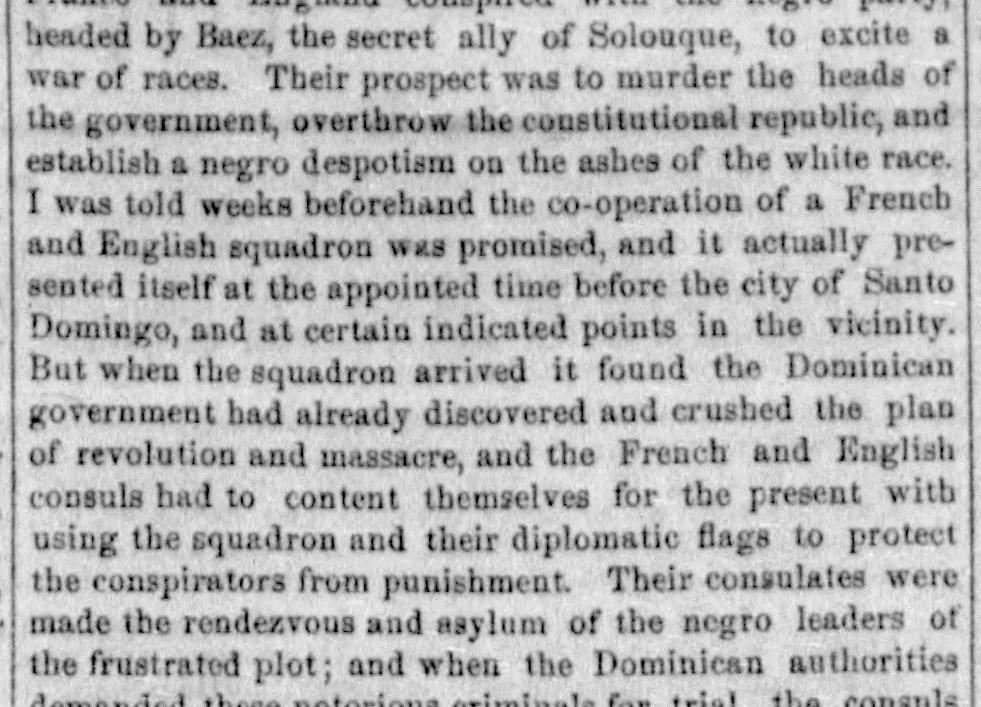
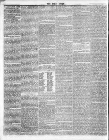

Government bad already discovered and crushed the plan of revolution andEl gobierno ya había descubierto y aplastado el plan de revolución y
The Daily Union. Washington [D.C.], October 19, 1855. Page 2. View the originalVer el original


See the full pageVer la página completaThe newspaper reported that the Dominican government discovered and crushed a revolutionary plot, but French and English consuls protected the conspirators from punishment by granting them asylum and refusing Dominican demands for their trial. The article claimed that England and France are usurping territory and violating neutrality laws near American trade routes, and it urged Congress to repeal the neutrality laws of 1818 regarding these powers until they evacuate their usurpations on American soil.El periódico comunicó que el gobierno dominicano desarticuló una conjura sediciosa, pero los cónsules francés e inglés sustrajeron a los inculpados de la vindicta pública concediéndoles asilo y desatendiendo las reclamaciones de los tribunales patrios para procesarlos. El artículo imputaba a Inglaterra y Francia usurpar territorios y conculcar las leyes de neutralidad en proximidad a las rutas comerciales norteamericanas, exhortando al Congreso a revocar las leyes de neutralidad de 1818 para dichas potencias mientras no desalojaran sus enclaves en el hemisferio.
FULL TEXT:TEXTO COMPLETO:
France and England conspired with the negro party, headed by Baez, the secret ally of Solouque, to excite a war of races. Their prospect was to murder the heads of the government, overthrow the constitutional republic, and establish a negro despotism on the ashes of the white race. I was told weeks beforehand the co-operation of a French and English squadron was promised, and it actually presented itself at the appointed time before the city of Santo Domingo, and at certain indicated points in the vicinity. But when the squadron arrived it found the Dominican government had already discovered and crushed the plan of revolution and massacre, and the French and English consuls had to content themselves for the present with using the squadron and their diplomatic flags to protect the conspirators from punishment. Their consulates were made the rendezvous and asylum of the negro leaders of the frustrated plot; and when the Dominican authorities demanded these notorious criminals for trial, the consulsFrancia e Inglaterra conspiraron con el partido negro, encabezado por Báez, el aliado secreto de Soulouque, para excitar una guerra de razas. Su prospecto era asesinar a los jefes del gobierno, derrocar la república constitucional, y establecer un despotismo negro sobre las cenizas de la raza blanca. Se me dijo semanas de antemano que la cooperación de una escuadra francesa e inglesa fue prometida, y realmente se presentó en el tiempo señalado ante la ciudad de Santo Domingo, y en ciertos puntos indicados en la vecindad. Pero cuando la escuadra llegó encontró que el gobierno dominicano ya había descubierto y aplastado el plan de revolución y masacre, y los cónsules francés e inglés tuvieron que contentarse por el presente con usar la escuadra y sus banderas diplomáticas para proteger a los conspiradores del castigo. Sus consulados fueron hechos el lugar de reunión y asilo de los líderes negros de la trama frustrada; y cuando las autoridades dominicanas demandaron a estos criminales notorios para juicio, los cónsules